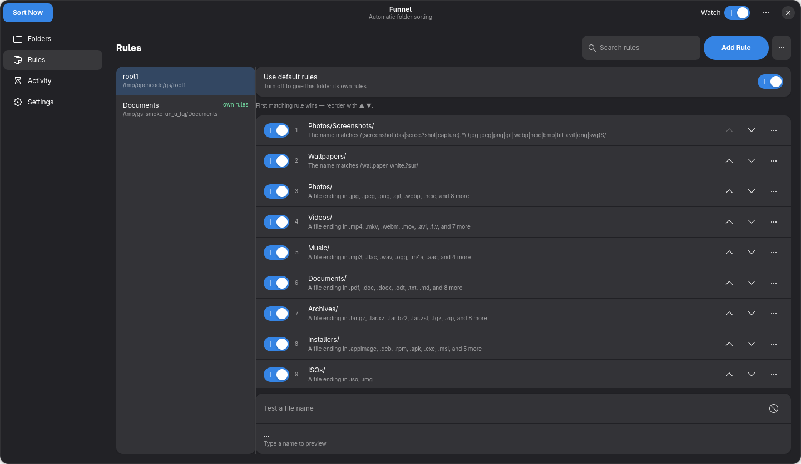
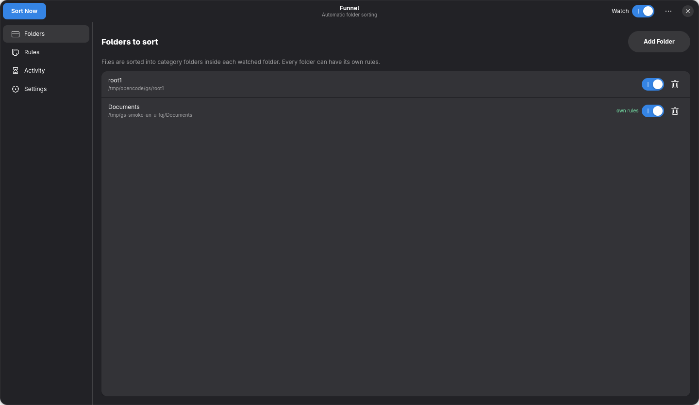
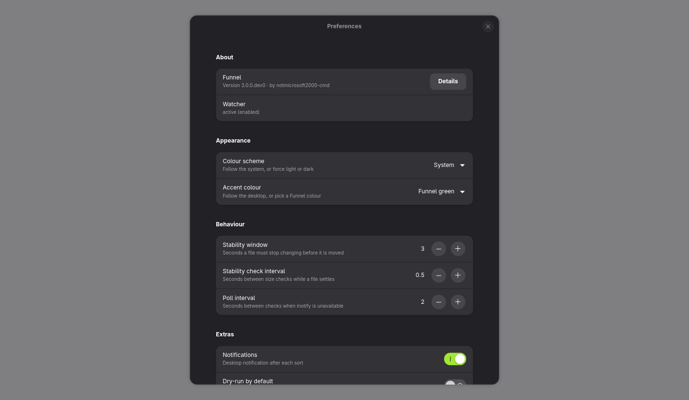
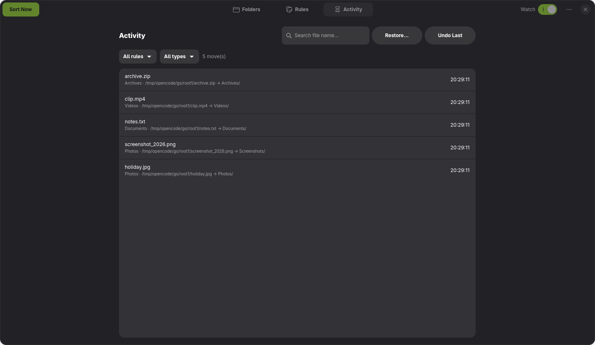

Custom sorting rules
Define conditions that decide where a file should go. Match by file extension or by a pattern in the file name, then send matches to the folder you choose.
Features
Every capability exists to keep your folders predictable and your rules easy to manage — from extension and name matching to per-folder configuration, watch mode, and undo.
Define conditions that decide where a file should go. Match by file extension or by a pattern in the file name, then send matches to the folder you choose.
Watch a folder and new files are sorted for you. Funnel waits until a file has stopped changing, so downloads and copies are never moved mid-write.
Choose the interface that fits how you work: a visual application for configuring folders and rules, or a command-line workflow for scripts and terminals.
Different folders can follow different rules. Keep a tidy Downloads folder while a project directory uses its own scheme, and inherit shared defaults anywhere that should stay the same.
Configure rules in a compact editor, refine them as structured data if you prefer, and reuse the same configuration across machines.
Funnel is developed in the open. Explore the source, report an issue, or contribute improvements through the project repository.
In practice
A file is detected, matched against your rules, moved, and recorded so it can be reversed.
The interface
A desktop application for setup, and plain JSON underneath for anything else. Screenshots from the Linux (GTK4) build.




Download Funnel and configure your first rules in a couple of minutes.